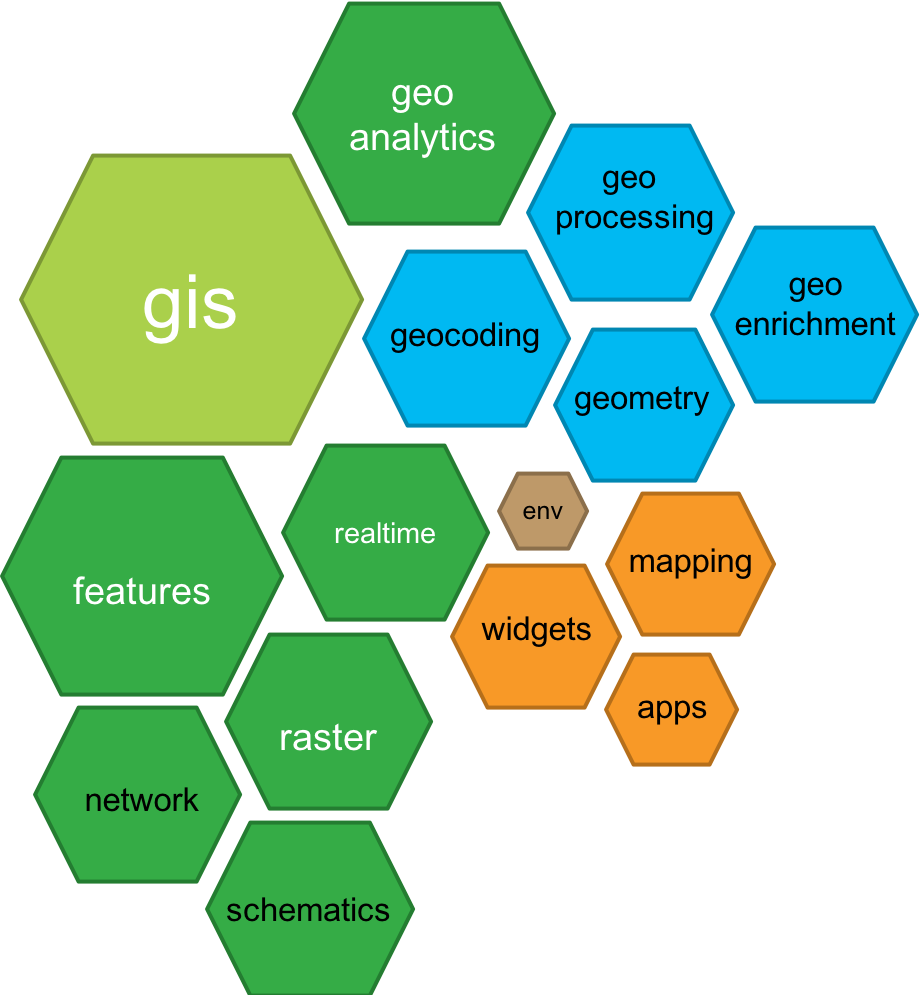
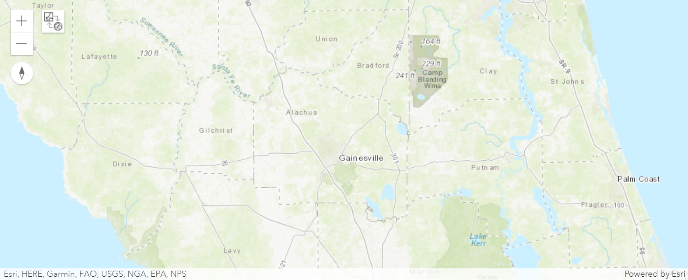
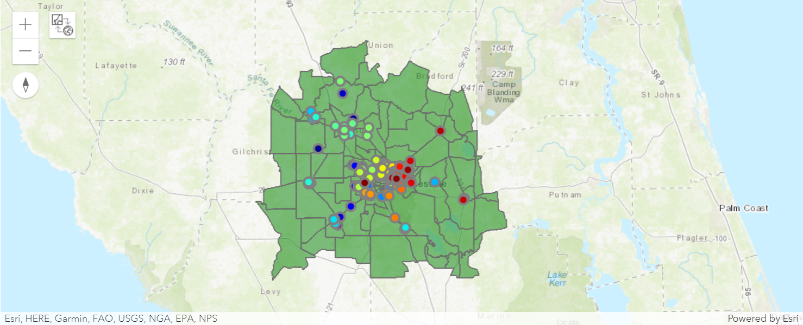
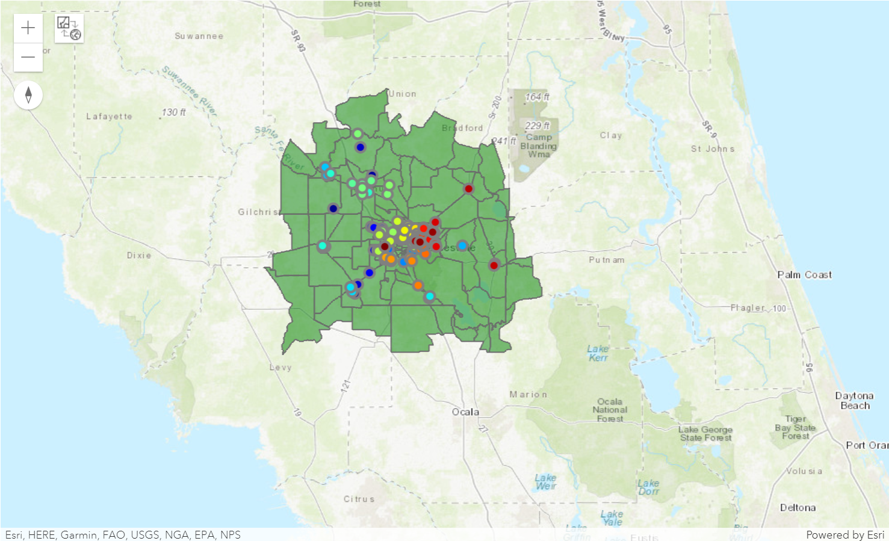
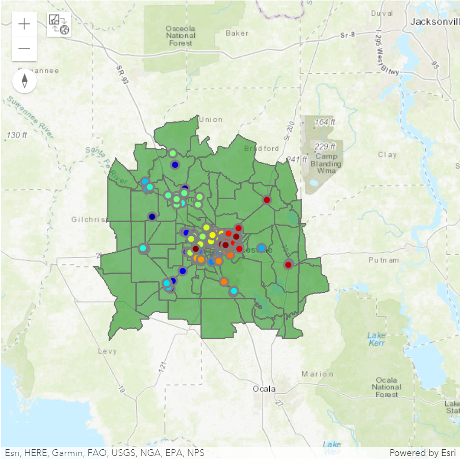
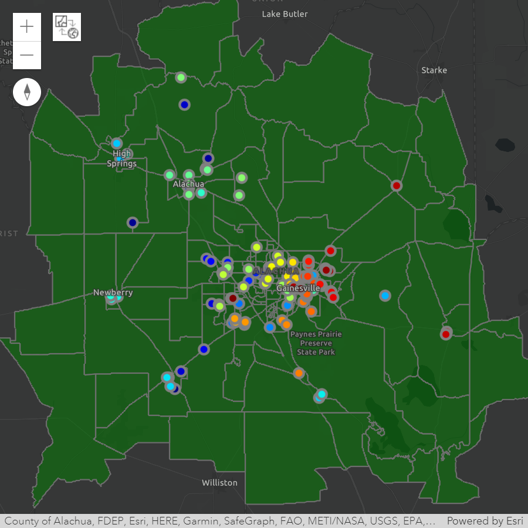
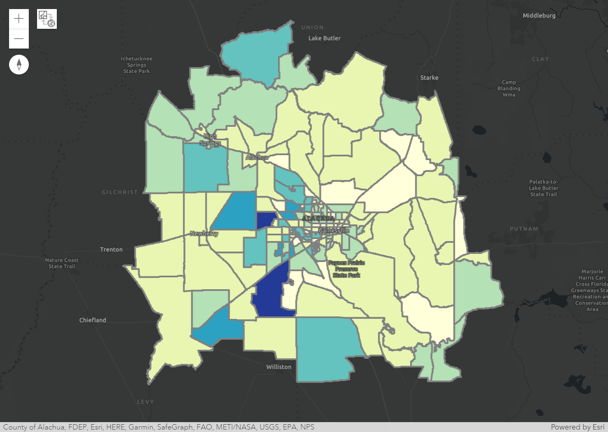

Visualizing Spatial Data#
{kind=link}

1. ArcGIS API for Python#
The ArcGIS API for Python, i.e., the arcgis package, is a powerful,
modern and easy to use Pythonic library to perform GIS visualization
and analysis, spatial data management and GIS system administration tasks
that can run both in an interactive fashion, and using scripts.
The package is shipped with a standard ArcGIS Pro installation.
The API is distributed as the arcgis package via conda and pip.
Within the arcgis package, which represents the generic GIS model,
functionality is organized into a number of different modules that makes it
simple to use and understand. Each module has a handful of types and functions
that are focused towards one aspect of the GIS.
This diagram below depicts the modules present in the API.
%%html
<iframe width="560" height="315"
src="https://www.youtube.com/embed/irpubkYLrWI"
title="YouTube video player" frameborder="0"
allow="accelerometer; autoplay; clipboard-write; encrypted-media; gyroscope; picture-in-picture" allowfullscreen>
</iframe>
1.1 Import the package#
The following statement imports the arcgis library and several submodules
that we use for to plotting maps in a Python Notebook.
import arcgis
from arcgis import GIS, GeoAccessor, GeoSeriesAccessor, pd
1.2 The arcgis.GIS class#
What is class in Python?
It is a blueprint for building things (a machine produces products)
Things get created from the class are called objects (or instances of the class)
DRY (Don’t repeat yourself) code.
Example classes: a college student or a car, or a data structure that organizes the data just as
np.ndarrayandpd.DataFrame.
What is GIS (Geographic Information System)?
Geographic Data:
collection
storage
manipulation
analysis
visualization
management/administration
distribution
A variety of technologies:
human activities (such as conducting survey of an area of land)
hardware
software (a narrower definition of GIS)
The arcgis.GIS:
a portal to do GIS in Python Notebooks
can link to an ArcGIS Online account
or, be used locally without the connection
2. Spatially Enabled DataFrame#
A Spatially Enabled DataFrame (SEDF) is a special type of pd.DataFrame that is
part of the ArcGIS API for Python. It allows you to work with and analyze spatial
data in Python, using the power of the Pandas library.
It is a class defined in the features module of arcgis (arcgis.features).
It contains types and functions for working with features and feature layers in the GIS.
Since it is an extension of pd.DataFrame class, meaning that it possesses all
functions of a normal DataFrame.
We use ArcPy as the geometry engine for this module, which gives us access to all native GIS data ArcGIS Pro supports.
Now, let’s see how we can load a feature class as a “SEDF.”
from arcgis import pd, GeoAccessor, GeoSeriesAccessor
import arcpy
gdb_worksp = r"..\data\class_data.gdb"
arcpy.env.workspace = gdb_worksp
blkgrp_fc = "blockgroups"
blkgrp_sedf = pd.DataFrame.spatial.from_featureclass(blkgrp_fc)
blkgrp_sedf.head()
| OBJECTID | STATEFP10 | COUNTYFP10 | TRACTCE10 | BLKGRPCE10 | GEOID10 | NAMELSAD10 | MTFCC10 | FUNCSTAT10 | ALAND10 | ... | DEN_NOTWEL | DEN_NOTATA | PCT_OWN5 | PCT_RENT5 | PCT_BACHLR | PCT_POV | PCT_RU1 | DATAYEAR | DESCRIPT | SHAPE | |
|---|---|---|---|---|---|---|---|---|---|---|---|---|---|---|---|---|---|---|---|---|---|
| 0 | 1 | 12 | 023 | 110903 | 2 | 120231109032 | Block Group 2 | G5030 | S | 57546992 | ... | 0.004918 | 0.0 | 17.225951 | 62.878788 | 9.922481 | 23.488372 | 23.488372 | REDISTRICTING, SF1, ACS 2010 | 120231109032 | {"rings": [[[530441.2199999988, 651631.75], [5... |
| 1 | 2 | 12 | 023 | 110904 | 1 | 120231109041 | Block Group 1 | G5030 | S | 85591551 | ... | 0.000329 | 0.000329 | 26.21232 | 58.015267 | 5.456656 | 4.102167 | 4.102167 | REDISTRICTING, SF1, ACS 2010 | 120231109041 | {"rings": [[[534712.1700000018, 663369.54], [5... |
| 2 | 3 | 12 | 007 | 000300 | 5 | 120070003005 | Block Group 5 | G5030 | S | 196424609 | ... | 0.000021 | 0.0 | 13.270142 | 68.181818 | 1.254613 | 10.701107 | 10.701107 | REDISTRICTING, SF1, ACS 2010 | 120070003005 | {"rings": [[[567924.9299999997, 665800.79], [5... |
| 3 | 4 | 12 | 007 | 000300 | 4 | 120070003004 | Block Group 4 | G5030 | S | 16339411 | ... | 0.0 | 0.0 | 18.924731 | 73.71134 | 12.617839 | 14.902103 | 14.902103 | REDISTRICTING, SF1, ACS 2010 | 120070003004 | {"rings": [[[588576.3599999994, 644359.46], [5... |
| 4 | 5 | 12 | 007 | 000300 | 1 | 120070003001 | Block Group 1 | G5030 | S | 57089369 | ... | 0.0 | 0.001138 | 22.957198 | 43.333333 | 1.134021 | 21.161826 | 21.161826 | REDISTRICTING, SF1, ACS 2010 | 120070003001 | {"rings": [[[576256.1799999997, 656541.8300000... |
5 rows × 202 columns
print(len(blkgrp_sedf))
print(blkgrp_sedf.shape)
178
(178, 202)
blkgrp_sedf['TOTALPOP'].values
<IntegerArray>
[2094, 2269, 1305, 1991, 2056, 1410, 1890, 2510, 1150, 1856,
...
1091, 637, 921, 1342, 2680, 1211, 1788, 1723, 1189, 789]
Length: 178, dtype: Int32
3. Visualizing spatial data#
3.1 Create a map object#
Before we can create a map, we need to set up a GIS instance that is connected to your ArcGIS Online account.
my_gis = GIS()
my_gis
Then, we can prepare SEDFs Loading data into the GIS instance
import arcpy
gdb_worksp = r"..\data\class_data.gdb"
arcpy.env.workspace = gdb_worksp
blkgrp = "blockgroups"
schools = 'schools'
blkgrp_sedf = pd.DataFrame.spatial.from_featureclass(blkgrp)
schools_sedf = pd.DataFrame.spatial.from_featureclass(schools)
Use the map() function to create a map widget from the GIS instance to create a map.
The location parameter takes a list of coordinates. And zoomlevel dictates
how “zoomed-in” the map will be displayed initially. It is a value ranged between 0 (world)
to 23 (house). Check this
link
to learn more.
my_map_in_my_gis = my_gis.map(location=[29.7, -82.3],
zoomlevel=9)
---------------------------------------------------------------------------
TypeError Traceback (most recent call last)
Cell In[11], line 1
----> 1 my_map_in_my_gis = my_gis.map(location=[29.7, -82.3],
2 zoomlevel=9)
TypeError: GIS.map() got an unexpected keyword argument 'zoomlevel'
my_map_in_my_gis

3.2 Load SEDFs into the MapWidget#
Call spatial.plot() and specify the map_widget parameter to add the layer
to a specific map.
Note that SEDF loaded later will overlap the SEDFs loaded earlier.
blkgrp_sedf.spatial.plot(map_widget=my_map_in_my_gis)
schools_sedf.spatial.plot(map_widget=my_map_in_my_gis,
col='NAME',
renderer_type='u')
my_map_in_my_gis

3.3 Modify the size of the widget window#
from ipywidgets import Layout
my_map_in_my_gis.layout = Layout(height="600px")
my_map_in_my_gis

my_map_in_my_gis.layout = Layout(width="600px", height="600px")
my_map_in_my_gis
{kind=link}

3.3 Change the Basemap#
basemapsattribute of amapreturns a list of available basemaps
my_map_in_my_gis.basemaps
---------------------------------------------------------------------------
NameError Traceback (most recent call last)
Cell In[19], line 1
----> 1 my_map_in_my_gis.basemaps
NameError: name 'my_map_in_my_gis' is not defined
Pick a basemap from the above list and assign it to the basemap attribute to
the map widget.
my_map_in_my_gis.basemap = 'dark-gray-vector'
my_map_in_my_gis
{kind=link}

3.4 Choropleth Map#
A choropleth map is a type of thematic map that uses color to represent a quantitative variable (e.g., population) for different geographic regions, such as countries, states, or counties.
In a choropleth map, each region is shaded or colored based on its corresponding value for the variable being mapped. Regions with higher values are typically shaded with darker or more intense colors, while regions with lower values are shaded with lighter or less intense colors.
ArcGIS Python API provides a series of color maps to plot features on maps.
from arcgis import mapping
mapping.display_colormaps()
---------------------------------------------------------------------------
AttributeError Traceback (most recent call last)
Cell In[21], line 3
1 from arcgis import mapping
----> 3 mapping.display_colormaps()
AttributeError: module 'arcgis.mapping' has no attribute 'display_colormaps'
map2 = my_gis.map(location=[29.7, -82.3], zoomlevel=9)
---------------------------------------------------------------------------
TypeError Traceback (most recent call last)
Cell In[22], line 1
----> 1 map2 = my_gis.map(location=[29.7, -82.3], zoomlevel=9)
TypeError: GIS.map() got an unexpected keyword argument 'zoomlevel'
blkgrp_sedf.spatial.plot(map_widget=map2,
colors="YlGnBu",
col='TOTALPOP',
renderer_type='c',
method='esriClassifyNaturalBreaks',
class_count=7)
map2.layout = Layout(height="700px")
map2.basemap = "dark-gray-vector"
map2
